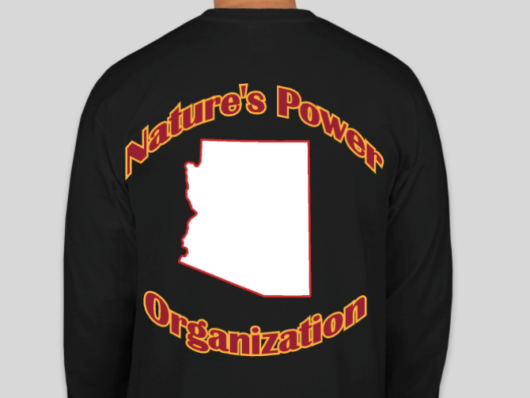
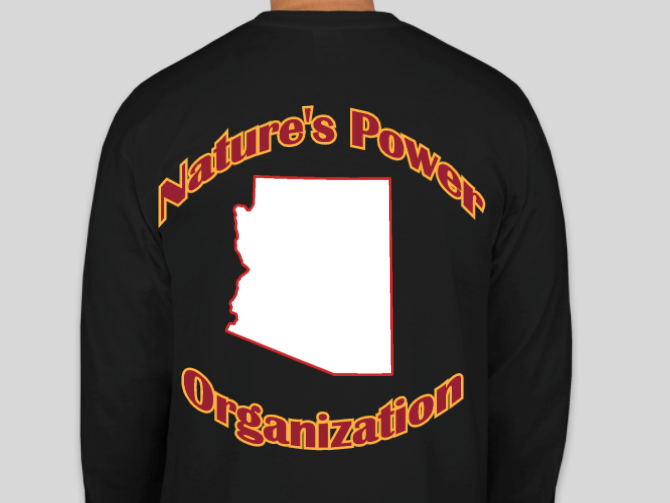

Desert Marigold
vary in size from 0.1 to 2.2 m tall. Most species have pinnate green leaves. Blooms naturally occur in golden, orange, yellow, and white colors, often with maroon highlights. Floral heads are typically (1-) to 4–6 cm diameter, generally with both ray florets and disc florets. In horticulture, they tend to be planted as annuals, although the perennial species are gaining popularity.
Scarlet Flax
Linum grandiflorum is a species of flax known by several common names, including flowering flax, red flax, scarlet flax, and crimson flax. It is native to Algeria, but it is known elsewhere in Northern Africa, Southern Europe and in several locations in North America as an introduced species.It is an annual herb producing an erect, branching stem lined with waxy, lance-shaped leaves 1 to 2 centimeters long. The inflorescence bears flowers on pedicels several centimeters long. The flower has 5 red petals each up to 3 centimeters long and stamens tipped with anthers bearing light blue pollen. It can on occasion be found as a casual well outside its normal established range; records from the British Isles, for example, are reasonably frequent (as per the latest BSBI atlas) but, grown as an annual, it rarely persists for more than one season.


 
